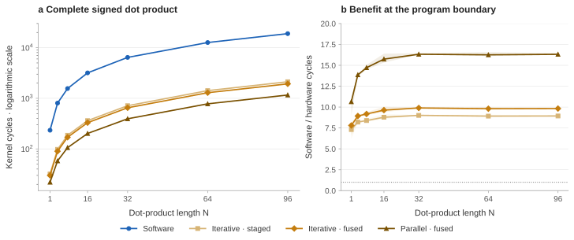
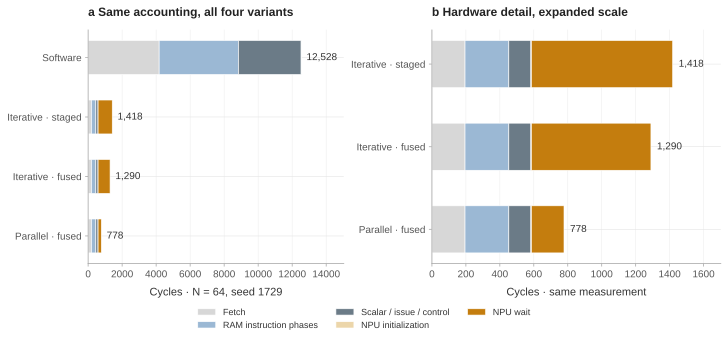
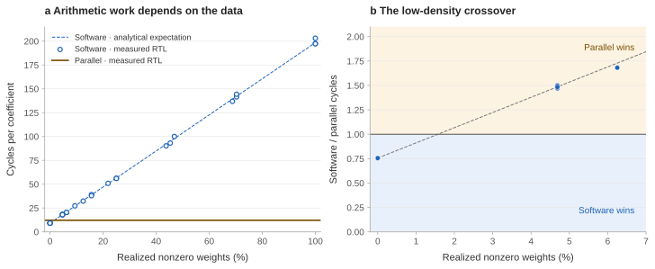
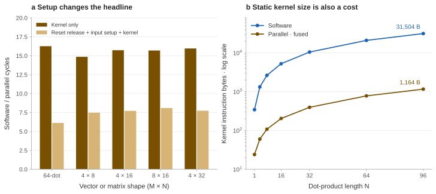
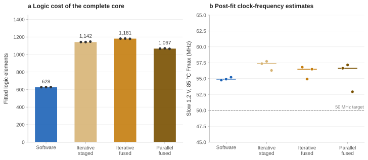
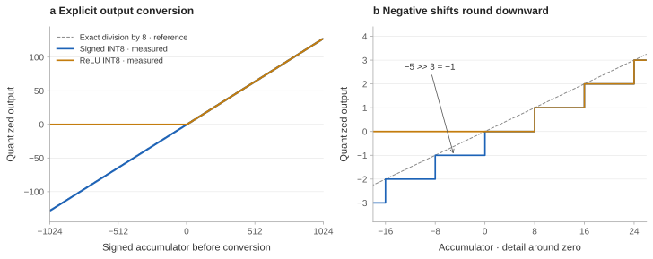

How much faster does a small processor become when multiplication moves from software into hardware? In RISC-NPU, a 64-element dot product drops from a median 12,648 to 778 clock cycles in processor simulation. Including input initialization reduces the speedup from 16.26× to 6.12×. The difference is the subject of this article: faster arithmetic helps, but the program still has to load its inputs and issue instructions.
Start with the computation
A dot product multiplies two lists element by element, then adds the products. For example, [2, −3, 4] and [5, 2, −1] give 2 × 5 + (−3) × 2 + 4 × (−1) = 0. This is an illustrative example, not a benchmark fixture. Repeating the operation for several rows of weights gives a matrix-vector product, one of the computations used in neural networks.
A multiply–accumulate (MAC) combines one multiplication with an update to a running sum: sum ← sum + x × w. RISC-NPU adds this operation to a small custom processor. Its signed eight-bit inputs, often called INT8, range from −128 to 127. A wider, 32-bit accumulator holds the sum.
The question is how much this instruction helps a complete kernel, the short program that loads the operands, computes the answer, and stores it. I compare software multiplication with three hardware configurations, then change the inputs to find where the benefit disappears.
The processor has two operand registers, a controller that spends several cycles on an instruction, and 256 words of data memory. It targets an FPGA, a chip whose logic can be configured to implement a circuit. The results here come from simulating its register-transfer-level (RTL) hardware description and fitting that description to an FPGA device. They are not performance measurements from a running board.
What I implemented, and what came from research
The paper that motivated the project, Armeniakos and colleagues’ mixed-precision RISC-V work, combines custom instructions with multi-pumped arithmetic, which reuses a unit at a faster internal clock, and soft SIMD, which processes multiple small values together. Its successor, MaRVIn, develops that mixed-precision approach further. RISC-NPU does not reproduce those mechanisms: it has a custom instruction set, not RISC-V, and processes one operand pair at a time.
The implementation here is a scalar MAC extension, its connection to the processor controller, and experiments that separate multiplier latency from instruction overhead. Snitch provides a useful reference for reducing instruction and operand-delivery overhead; OpenGeMM and Gemmini examine acceleration within larger systems. Their results motivate the questions, not numerical comparisons with this much smaller processor.
How the instruction reaches the hardware
The extension reads signed eight-bit operands from the low bytes of registers A and B, latches them when a command is accepted, and returns its result to A through the existing data-selection path. The controller stalls while the command is active. This is scalar, tightly coupled acceleration: one operand pair per instruction, not a vector engine or a streaming accelerator.
Instruction encodings and exact arithmetic rules
| Instruction | Encoding | Architectural behavior |
|---|---|---|
| NINIT | 0xC0000000 | Sign-extend A[15:0] into the signed 32-bit accumulator. |
| NMAC | 0xD0000000 | Multiply signed A[7:0] × B[7:0], saturating-add into the 32-bit accumulator, return the updated sum in A. |
| NQUANT | 0xE0000000 | shift | (relu << 8) | Arithmetic right shift by the low five instruction bits; clamp to [−128, 127]. Bit 8 selects [0, 127] instead. |
| Legacy MAC | 0xB0000000 | Preserved 16-bit saturating accumulation with ReLU output; not the performance kernel used below. |
Saturation means clamping a result to the largest or smallest representable value instead of wrapping around. NQUANT converts the accumulated sum back to an eight-bit output; its optional ReLU mode replaces negative outputs with zero.
NQUANT does not overwrite the wide accumulator. Right shift rounds negative values toward negative infinity; there is no floating-point scale, learned zero point, or round-to-nearest rule hidden in the instruction. “Quantization support” here means this specific conversion, not compatibility with every inference framework.
Software: runtime bit decomposition
sum = 0
for each runtime coefficient w:
if (w & 255) == 0: continue
shifted_x = x
for bit = 0 … 7:
if w & (1 << bit):
if bit < 7: sum += shifted_x
else: sum -= shifted_x
shifted_x <<= 1
store sumHardware: actual instruction sequence
LDIA 0 NINIT // explicit initialization LDA x[0] LDB w[0] NMAC // signed product + sum LDA x[1] LDB w[1] NMAC … // dimension-unrolled STA output
The software pseudocode summarizes the emitted assembly. Both programs are unrolled: the generator writes a separate instruction sequence for each element instead of executing an indexed loop. It tests the original coefficient with immediate masks, avoiding repeated coefficient shifts and spills, and skips zero weights at runtime. It is a stronger baseline than operand-magnitude repeated addition. It is still hand-written for this constrained ISA, not a claim to the fastest possible software multiplier.
Change one part at a time
Iterative, staged uses the eight-step shift-add multiplier and separate states for committing the result. Iterative, fused captures the updated wide sum as soon as the product is available, eliminating two cycles without changing the arithmetic. Parallel, fused substitutes a registered signed multiplier while keeping the fused path. Every variant has the same command interface and numerical behavior.
The exhaustive unit test observes 12, 10, and 2 clock intervals from command acceptance to the completion pulse. Those are unit latencies. A complete NMAC instruction also takes cycles to fetch and start the instruction, receive the completion signal, and return to fetching. Unit latency therefore captures only part of the program’s cost.
Measure the program, then explain it
I run each kernel on the CPU hardware description using the GHDL simulator. A common boot prefix writes the input vector and coefficients into data RAM. The arithmetic then reads those runtime values. Firmware depends on matrix dimensions and the selected implementation, not on coefficient values. For each shape and configuration, identical kernel hashes are checked across input families and random seeds.
Here, N is the number of operand pairs in a dot product. M is the number of output rows; M = 1 is a single dot product. The tests vary lengths, matrix shapes, signed input values, and the proportion of zero weights. Each configuration receives the same inputs and must store the same answer.
Workloads, seeds, and timing boundaries
| Experimental dimension | Controlled choice |
|---|---|
| Dot products | N ∈ {1, 4, 8, 16, 32, 64, 96}; signed INT8 operands, signed 32-bit result. |
| Matrix-vector products | M × N ∈ {4 × 8, 4 × 16, 8 × 16, 4 × 32}; independent output rows. |
| Input families | All-zero; 80%-zero sampling; small signed values [−7, 7]; uniform signed bytes; alternating extrema −128 and 127. |
| Replicates | Three input seeds, 1729–1731, for stochastic families; one fixture for each deterministic family. |
| Density sweep | N = 64; nine target nonzero probabilities from 0 to 1, three seeds each. Plots use realized density, not requested probability. |
| Kernel interval | First kernel fetch through final output-store retirement, inclusive. Includes accumulator initialization, loads, control, waits, and stores. |
| Cold interval | First rising edge after reset release through the same final store. Includes reset settling and synthetic input-writing prefix; excludes the reset assertion interval. |
| Correctness | Independent integer reference; every output checked at storage and read back from RAM after timing ends. |
There are 592 kernel runs and 1,296 verified output values. Repeated identical simulations do not create statistical independence: the plotted ranges describe three different input fixtures, not measurement noise, confidence intervals, or a population-level estimate. Deterministic hardware cycle counts overlap exactly.
The kernels compute raw dot products and matrix-vector products, not a trained network. All tested sums fit in signed 32 bits, so software wraparound arithmetic and the NPU’s saturating accumulator agree on this workload. Overflow and conversion semantics are tested separately. No model accuracy, image quality, or inference-energy claim follows from these kernels.
Where the saved cycles go
For the 64-element uniform signed-byte workload, software takes a median 12,648 cycles across three input seeds. The staged, fused, and parallel hardware variants take 1,418, 1,290, and 778 cycles. The corresponding speedups are 8.92×, 9.80×, and 16.26×. These ratios compare complete, equivalent kernel intervals.
{kind=link}

The hardware counts follow an exact accounting identity for this firmware: Cstaged = M(22N + 10), Cfused = M(20N + 10), and Cparallel = M(12N + 10). For one 64-element dot product, the parallel count is 12 × 64 + 10 = 778 cycles. C denotes the complete kernel cycle count. These identities summarize the simulated instruction schedule; they are not predictions for caches, external memory, or a different ISA.
{kind=link}

Removing two retirement cycles saves exactly 128 cycles across 64 MACs. Replacing the multiplier saves a further 512. Yet the sixfold reduction in unit latency from 12 to 2 intervals yields only a 1.82× improvement from the staged to the parallel complete kernel.
In the parallel version, 586 of 778 cycles lie outside the NPU-wait category: 195 fetch cycles, 258 RAM-instruction phases, 130 scalar/issue/control cycles, and three initialization phases. Eliminating all 192 remaining wait cycles would offer at most 1.33× additional speedup if everything else stayed fixed. That is a bound on this accounting partition, not a proposed zero-latency circuit.
When software wins: zero weights
The accelerator executes one MAC for every coefficient, including zero. Software can branch around the multiplication. At N = 64 with all-zero weights, software takes 588 cycles while the parallel version still takes 778: software is 1.32× faster. The architecture did not change; the useful work did.
{kind=link}

The software count can be reconstructed exactly: CSW = 12 + 9N + 141K + 12P, where K is the number of nonzero weights and P is their total eight-bit population count, meaning the number of 1 bits across their byte representations. The 9N term pays the runtime zero test; nonzero coefficients enter the bit-decomposition path. For uniformly sampled nonzero bytes, the expected number of 1 bits per byte is 1024/255, about four. This gives an expected crossover near 1.6% density at N = 64. It is an analytical expectation, not a directly measured threshold; individual finite fixtures cross at different points.
This is not a general recommendation to process sparse networks in scalar software. A zero-aware accelerator, compressed representation, or block-sparse kernel would change the comparison. It is evidence that the speedup belongs to an architecture–program–input combination, not to the MAC instruction in isolation.
Count input setup, too
The cold interval adds the same input-writing program to each configuration. At N = 64 it adds 1,540 cycles: 1,536 for the 128 initialized words and four for reset settling. Software then takes a median 14,188 cycles and parallel hardware 2,318. The speedup becomes 6.12×, not 16.26×.
{kind=link}

The instruction set (ISA) has direct-address loads and stores but no general indirect-addressing loop. The benchmark therefore unrolls its dimensions. At N = 64 the software kernel occupies 21,008 bytes and the hardware kernel 780 bytes. That difference is real; its instruction-memory latency, capacity, and energy consequences are not modeled. A larger demonstration cannot be justified by extrapolating this ideal instruction source indefinitely.
The matrix-vector cases repeat the row kernel and reuse the initialized input vector. They demonstrate correct multi-output execution, not an optimized general matrix-multiplication (GEMM) engine. There is no tiling, overlap, packed SIMD, or cross-row operand forwarding.
Account for the FPGA resources, too
All four configurations are fitted for the same Cyclone IV E EP4CE115F29C7, with the same 50 MHz constraint, a virtual-pin boundary that excludes physical I/O placement, internal 256 × 32-bit data RAM, and fitter seeds 1–3. The instruction source is external to this boundary. These are post-fit core estimates, not a placed board-level system with a program ROM and physical I/O.
{kind=link}

The median logic-element counts are 628 for software-only, 1,142 for staged iterative, 1,181 for fused iterative, and 1,067 for parallel. Parallel uses fewer general-purpose logic elements than the iterative versions but consumes a dedicated multiplier. It is therefore misleading to call it simply “smaller” without reporting both resources. Its slow-corner Fmax estimates span 52.93–57.15 MHz across these three fits, not a measured operating-frequency range on a board.
Logic elements are the FPGA’s configurable logic resources; the dedicated multiplier is a separate resource. Power, energy, board behavior, and sustained external-memory bandwidth remain unmeasured.
Correctness is a visible part of the result
All 65,536 signed 8-bit operand pairs are checked on each NPU variant: 196,608 exact product checks. The test changes live operand ports after command acceptance, and checks completion pulses, positive and negative accumulator saturation, and conversion behavior. A second sweep applies 2,049 accumulator inputs to both output modes on all three variants, adding 12,294 conversion checks.
{kind=link}

Exhaustive multiplication is not exhaustive processor verification. The accumulator has far more possible histories than this test explores. The existing 13-test regression suite supplies additional arithmetic, branch, CPU/NPU integration, and wrapper checks. None substitutes for formal proof, timing-aware gate-level simulation, or on-board validation.
What this changes about the next hardware revision
In the parallel kernel, most cycles already lie outside the NPU wait. The next useful experiment should reduce invocation or operand-delivery cost, and be evaluated against the same complete-kernel boundary.
| Next hypothesis | Concrete experiment | Evidence required before a claim |
|---|---|---|
| Amortize instruction issue | A counted dot-product command with explicit operand addressing. | Cycle partition, code size, arbitration cost, and fitted state. |
| Exploit sparse weights | A zero-aware issue path or compressed-index kernel. | Density crossover including index decoding and data movement. |
| Supply more operands per instruction | Packed signed lanes or a small operand buffer. | Packing overhead, supported shapes, numerical contract, and resource cost. |
| Compare integration choices | A memory-mapped unit with the same datapath and arithmetic. | Matched invocation, transfer, completion, and output-store accounting. |
These are proposed extensions, not implemented results. Snitch, XpulpNN, OpenGeMM, and SNAX provide precedents for asking those questions; importing their reported gains would not answer them on this processor.
The result points to a specific next step: reduce the work surrounding each MAC. In this core, accelerating dense arithmetic exposes instruction and operand-delivery costs that were previously hidden by software multiplication. A counted dot-product command is worth testing next, but it must earn its improvement with the same input, output, and resource accounting.
Evidence you can inspect and reproduce
The figures are generated from archived experiment records. Each run records input fixtures, firmware, output references, simulation logs, and source hashes. The package includes the exact RTL, measurement scripts, firmware, and raw reports used for this revision.
Reproduction sequence and interpretation notes
The package README lists commands for GHDL and Quartus. Run the existing regression suite, then exhaustive arithmetic verification, then the CPU workload sweep. Fit all four cores with the listed seeds. Finally regenerate SVG/PNG figures from completed manifests. The plot pipeline rejects missing completion markers or mismatched result hashes.
The simulation clock period is 10 ns for convenient waveform timing; it does not assert that this FPGA runs at 100 MHz. Performance conclusions use cycles. Fitted timing is separate. The cold path is a controlled synthetic initializer, not deployment boot time. Three input seeds and three fitting seeds are descriptive samples, not evidence of statistical significance.
References
- G. Armeniakos, A. Maras, S. Xydis, and D. Soudris. Mixed-precision Neural Networks on RISC-V Cores: ISA extensions for Multi-Pumped Soft SIMD Operations. ICCAD 2024. Original research reference; mechanism not reproduced here.
- F. Zaruba, F. Schuiki, T. Hoefler, and L. Benini. Snitch: A tiny Pseudo Dual-Issue Processor for Area and Energy Efficient Execution of Floating-Point Intensive Workloads. IEEE Transactions on Computers 70(11), 1845–1860, 2021.
- X. Yi et al. OpenGeMM: A Highly-Efficient GeMM Accelerator Generator with Lightweight RISC-V Control and Tight Memory Coupling. ASP-DAC 2025.
- D. Metz, V. Kumar, and M. Själander. BISDU: A Bit-Serial Dot-Product Unit for Microcontrollers. ACM Transactions on Embedded Computing Systems, 2023. Author manuscript.
- H. Genc et al. Gemmini: Enabling Systematic Deep-Learning Architecture Evaluation via Full-Stack Integration. DAC 2021.
- R. A. Antonio et al. An Open-Source HW-SW Co-Development Framework Enabling Efficient Multi-Accelerator Systems. ISLPED 2025. SNAX.
- G. Armeniakos, A. Maras, S. Xydis, and D. Soudris. MaRVIn: A Cross-Layer Mixed-Precision RISC-V Framework for DNN Inference From ISA Extension to Hardware Acceleration. IEEE Transactions on Computer-Aided Design of Integrated Circuits and Systems 45(5), 2432–2445, 2026.
- A. Garofalo, G. Tagliavini, F. Conti, L. Benini, and D. Rossi. XpulpNN: Enabling Energy Efficient and Flexible Inference of Quantized Neural Networks on RISC-V Based IoT End Nodes. IEEE Transactions on Emerging Topics in Computing, 2021.
Experiment records: September 13, 2026. The plotted values come from this project; references describe related mechanisms and evaluation approaches, not interchangeable benchmark results.